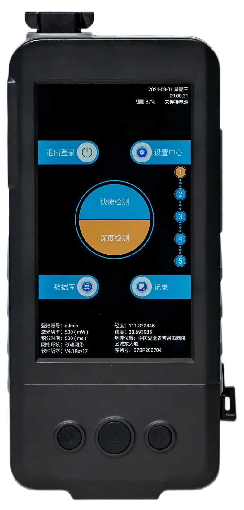

Solafact 510
Product Introduction

SOLAFACT 510 is a professional handheld Raman spectroscopic substance identification instrument that uses 785nm laser Raman spectroscopic scattering technology as a detection method. It is small in size, light in weight, and has powerful management and calculation functions. The equipment can perform conventional chemical warfare agents, Detection and identification of explosives, precursor chemicals, flammable and explosive dangerous goods, highly toxic substances, drugs, jewelry and jade, pharmaceutical APIs, and general chemicals. The operation is simple and the identification is fast and accurate.
Features
Space optical path design, high luminous flux, high sensitivity, high quality spectrum
The detection speed is fast, and the detection time of conventional substances is 2 to 3 seconds.
Modular battery design, easy to replace, long standby time, optional large capacity high performance battery module.
Perfect cloud support: support software update at any time, support database update at any time, support custom database upload, support test record upload to the cloud, support scanning QR code to view cloud report.
At the same time realize the detection of drugs and explosives, explosives pg level, drugs ng level.
Powerful intelligent analysis algorithm, rapid identification of various mixture substances, accurate detection.
Technical Specifications
Performance Parameters
Detection of dangerous chemicals, drugs and precursor chemicals; explosives and precursor chemicals, etc.
＞ 3000，Can be expanded according to user needs
Parameter Name
Detection object
Factory warehouse quantity
One-handed operation, one key can complete a test; There are physical buttons for power on/off, detection and return.
Adaptive technology
Raman spectroscopic analysis technology, for the liquid, solid and powdery substances in the transparent package, the equipment can complete the detection without touching the sample, and give the specific name and spectrum of the measured substance and other information.
Operation method
Detection mode
Quick detection and deep detection two modes
Display
5″ high-definition display, high-sensitivity capacitive touch screen, screen resolution not less than 1920×1080
Human-computer interaction
Multi-touch full operation interface
Spectral range
200 cm-1~3200 cm-1
Spectral resolution
≤ 8cm-1
Size
182 mm ×88 mm ×30mm
Weight
490g with battery
Environmental adaptability
Working temperature: -20~+40℃; Storage temperature: -40~+50℃
Working distance
The equipment adopts a pull-type damping probe, and the working distance is continuously adjustable. It can conveniently and accurately detect bottled samples or bagged samples without accessories.
Power supply battery
Rechargeable polymer lithium battery, one for one use and one for backup, the working time of a single battery is > 4 hours. A large-capacity battery module can be installed directly, and the working time is ≥ 12 hours.
Battery replacement and charging
The battery can be quickly replaced without dismantling the machine or using tools; the battery can be charged independently offline; the adapter can be connected to the mains for charging, it can be charged by the car, and can be charged by a portable mobile power supply; the device can be charged with a power bank while in use
Data transmission
Support Wi-Fi, 3G/4G network data transmission.
3G/4G card slot
Support reserved card slots for installing and replacing 4G cards without dismantling the phone.
Device location
Support GPS for geographic positioning, and send the device location, device status and usage to the cloud background for display.
Test result report generation
The device can independently generate a detection report, which includes: item spectral name, attribute, detection time, GPS or Beidou positioning information, QR code, photo, etc. The detection data is automatically saved, and the data storage is not less than 10,000 pieces.
SMS push
The device has a SMS push function switch. After it is turned on, the device can automatically send a short message to the bound mobile phone to inform the detection result. The content of the short message includes the detection result, category, matching degree, detection time and location and other information.
Data upload and report viewing function
It can automatically exchange data with the cloud background through the wireless network, upload or download relevant information and data; after generating the test report, upload it to the cloud background, and generate a QR code at the same time (the information of the QR code is consistent with the report); it can be scanned by mobile phone QR code, download and view the report; the report can be viewed in the remote background.
Self-built library and upload
The device supports users to build their own databases, which can be directly uploaded to the cloud server without a computer and shared with other devices of the same user.
Software upgrade
In the state of WiFi or 4G, the operating software can be manually or automatically upgraded without the help of other devices.
Database upgrade
Under WiFi or 4G, the database can be upgraded manually or automatically without the use of other devices.
Alarm function
When dangerous goods are found, the machine will give prompts in the form of vibration, alarm sound and screen animation.
Application Area
It can be widely used in anti-drug, customs, public security, security inspection, pharmaceuticals, industrial quality control, fire hazard inspection, mail/express inspection, food safety and other fields.